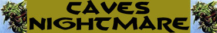

Urlo Terrificante;
Attacco Veloce Inferiore;
Dilaniare;
Assorbimento Minimo del Danno;

|
|
Ambiente/Habitat | Caverne e Sotterranei |
| Frequenza | Molto Rara | |
| Organizzazione | Solitario | |
| Periodo di Attività | Qualsiasi | |
| Dieta | Carnivora | |
| Intelligenza | Average intelligence (8) | |
| Punti Combattimento | 15 Punti Combattimento | |
| Tesoro | Vedi Sotto | |
| Allineamento Dominante | Caotico Malvagio | |
| Numero di Apparizione | 1 | |
| Classe Armatura | 3 [10 base, 5 corazza, -2 destrezza] | |
| Movimento | 8 esagoni | |
| Dadi Vita | 10 (+ 10 punti ferita) | |
| Thac0 | Thac0 10 | |
| Numero di Attacchi | Artiglio/Artiglio/Morso | |
| Danni | 3d4+3 (taglio) / 3d4+3 (taglio) / 2d4+4 (taglio) | |
| Poteri Offensivi |
Istinto Predatorio; Urlo Terrificante; Attacco Veloce Inferiore; Dilaniare; |
|
| Poteri Difensivi |
Robustezza
Superiore
(+ 10 punti ferita); Assorbimento Minimo del Danno; |
|
| Poteri Generici | Nessuno; | |
| Vulnerabilità | Nessuna; | |
| Resistenza alla Magia | Nessuna; | |
| Sensi | Infravisione (21 metri); Sensi Superiori; | |
| Dimensioni | Large (3,50 m. di lunghezza) | |
| Morale | Fanatic (17) | |
| Valore in Punti Esperienza | 5122 |
|
TIRI SALVEZZA DELLA CREATURA |
|||||||
| CORAGGIO | ENERGIA VITALE | MAGIA* | MALATTIA | MENTE | RIFLESSI | ROBUSTEZZA | VELENO |
| 0 | +5% | 0 | 0 | 0 | 0 | +5% | 0 |
| 39 | 39 | 54 | 37 | 52 | 46 | 36 | 34 |
Descrizione
Questo orrendo umanoide è caratterizzato da una pelle colore arancione e da un fisico possente. La sua testa è bestiale ricordando lontanamente quella di un feroce ed enorme lupo. Dalle sue fauci spuntano quattro zanne affilate e leggermente rivolte verso l'esterno, due dalla mascella superiore e due da quella anteriore. Ma ciò che rende questa creatura particolarmente terrificante sono le sue possenti mani munite di artigli affilati come rasoi e capaci di penetrare la pelle come burro.
Combat
L'Incubo delle Caverne attacca le proprie prede emettendo appena possibile il suo urlo terrificante per poi combattere iniziando dalle creature che hanno resistito al suo potere. Nel corso del combattimento questa creature utilizzerà il suo urlo più volte possibile cercando di abbattere le creature che ha precedentemente ferito gravemente o che ritiene maggiormente pericolose.
ISTINTO PREDATORIO (Moderate Special Ability): La creatura possiede un forte istinto predatorio, per tale motivo costei riceve un bonus costante di +1 ai suoi tiri per colpire.
URLO TERRIFICANTE (Powerful Special Ability): In luogo di effettuare una diversa azione complessa, questa creatura è in grado di emettere un urlo mostruoso in grado di terrificare chi si trova nei paraggi. Si tratta di un'azione complessa che la creatura effettua a fattore iniziativa +2. Tutte le creature che si trovano entro 15 metri di distanza dovranno superare un tiro salvezza su coraggio. Se il tiro salvezza fallisce la vittima sarà terrorizzata dalla paura e sarà costretta a restare tremante ed immobile al suo posto senza poter compiere alcuna azione per tre round. La vittima, però, non subirà alcuna penalità alla propria classe armatura ed ai propri tiri salvezza in quanto costei potrà continuare a difendersi passivamente (non potranno usare, però, difese attive come deflessioni o schivate). Si noti che questo potere richiede che il suono possa diffondersi fino alle vittime (se, ad esempio, la creatura è sotto effetto di una magia di silenzio questo potere non potrà essere effettuato). Questo potere ha effetto solo sulle creature dotate di apparati uditivi funzionanti di tipo animale (non avendo alcun effetto su non morti, costruiti, esseri extraplanari e creature che non posseggono apparati uditivi come le melme). Le creature dotate di un ammontare di dadi/vita livelli pari o superiori a quelle del mostro dovranno fallire due tiri salvezza consecutivi per subire gli effetti dell'urlo (effettueranno, quindi, immediatamente un secondo tiro salvezza qualora sbaglino il primo ma considerandosi questi come un solo tiro salvezza potranno ripetere solo uno degli stessi utilizzando punti divini od qualsiasi altro strumento). Una volta utilizzata questa abilità speciale la creatura non può utilizzarla nuovamente nei quattro round di combattimento immediatamente successivi.
ATTACCO VELOCE
INFERIORE
(Least Special Ability):
Questa creatura è in grado di effettuare i propri attacchi più velocemente del
normale. Costei quindi riceve un
bonus all'iniziativa dei propri attacchi pari a - 1,
fermo restando il limite minimo di +1 al fattore iniziativa del proprio attacco.
Inoltre, qualora i
tiri di iniziativa sugli attacchi effettuati dalla creatura abbiano un risultato
superiore, questi saranno considerati
pari a 9.
DILANIARE
(Lesser Special
Ability): Qualora questa creatura
colpisce con entrambi gli artigli lo stesso avversario ne dilania il corpo
infilando gli artigli nello stesso per poi allargare con forza le possenti zampe
producendo 3d3 danni da lacerazione
supplementari. Creature non dotate
di un comune corpo di carne sono immuni agli effetti di questo attacco speciale
(ad esempio i costruiti, eccetto quelli di carne, gli elementali, gli scheletri,
le creature incorporee, le melme ecc...).
ROBUSTEZZA SUPERIORE (Typical Ability): Il fisico di questa creatura è estremamente robusto conferendole una robustezza superiore che le garantisce 10 punti ferita supplementari.
ASSORBIMENTO MINIMO DEL DANNO (Typical Ability): Il corpo della creatura è così compatto che la stessa riduce di - 1 danno ogni singolo attacco fisico (botta,taglio,punta) subito (indipendentemente dai dadi di danno tirati con l'attacco), questo beneficio non si estende ai danni diversi da quelli fisici (come fuoco e come i danni di molte magie i cui effetti non possono essere ricondotti a quelli di danni fisici).
Habitat/Society
Nonostante si tratti di una creatura assai intelligente, l'Incubo delle Caverne non parla alcuna lingua potendo emettere suoni simili a quelli di un grosso cane rabbioso. Si tratta di un essere solitario che si aggira tra le caverne facendo a pezzi quasi tutto ciò che incontra. Le razze intelligenti del sottosuolo lo temono e tramandano ai loro giovani che la migliore cosa da fare quando si incontra questa creatura è scappare a gambe levate. Questa creatura accumula tesori che scambia per favori, carne e prodotti che non è in grado di recuperare (come alcolici, pelli conciate, ecc...), con creature in grado di commerciare con la stessa (si tratta di esseri molto potenti come i Mind Flayer i quali a loro volta rischiano molto a recarsi nel territorio di questa creatura senza l'adeguata protezione).
Ecology
Questo
formidabile predatore è stanziale. Una volta trasferitosi in una zona oscura
pattuglia i dintorni in cerca di prede. Preferisce posizionarsi ad una distanza
non troppo elevata da centri abitati o luoghi di passaggio in modo da avere
sempre a portata una riserva di carne fresca.
Mystical Resource Sourge
(Ugola) Quantità: 1, Presenza 33% - Effetto Particolare:
Paura
- Qualità della Risorsa:
Uncommon.
| Tipologia di Tesoro | INDIVIDUALE | Quantità |
| Gemme |
25% + 25% |
2d4 gemme |
| Oggetti Preziosi | 12% + 12% | 1d12: (1-6) 1 oggetto (7-9) 2 oggetti (10-12) 3 oggetti |
| Oggetti Comuni | 50% | 1d3 oggetti comuni |
| Armi | 33% + 33% | 1d3 armi |
| Armature | 25% + 25% | 1d2 corazze |
| Oggetto Magico | 20% + 15% + 10% | 1 oggetto magico 1d10: (1-7) common (8-10) rare |
| Monete di platino | 33% + 33% | 5d10 monete di platino |
| Monete d'oro | 50% + 50% + 50% | 1d20 * 5 + 1d10 monete d'oro |
| Monete d'argento | 50% + 50% + 50% | 1d20 * 10 + 1d10 monete d'oro |